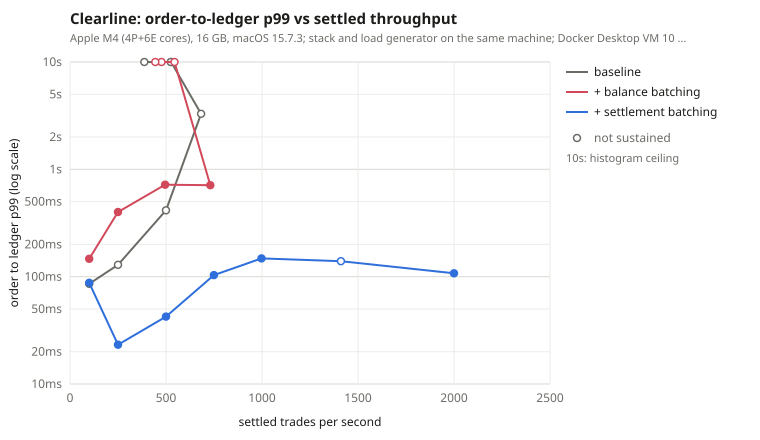
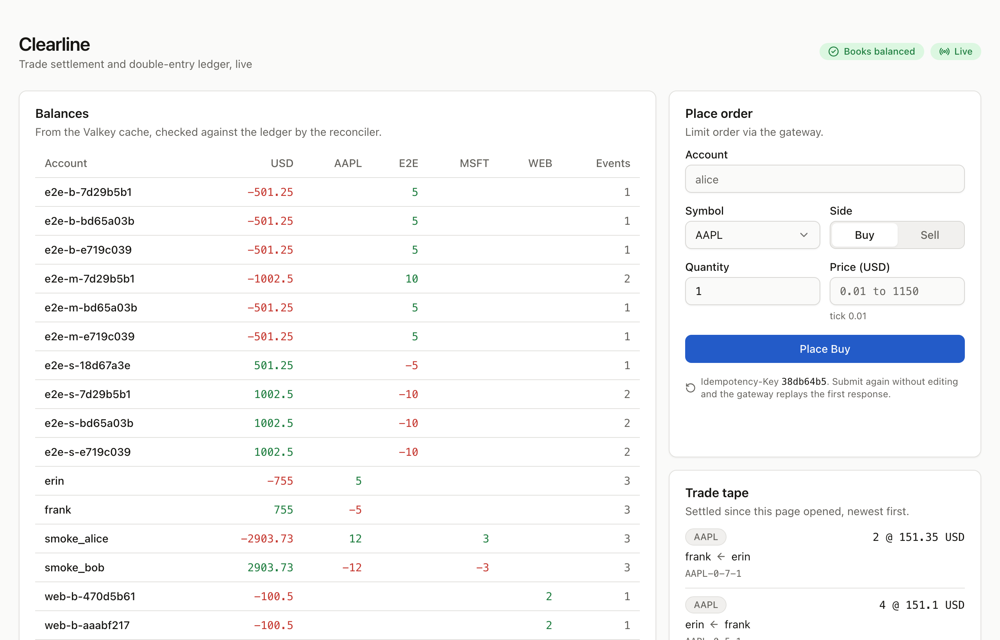

Orders arrive through a REST API, are matched by a C++ matching engine, settled into a Postgres double-entry ledger exactly once, and reflected in a live balance cache and dashboard.
Solo project, Nov 2026. Public repo.
Architecture
Arrows follow one order. Every Kafka consumer commits its offset only after its own write is durable, and dedupes on event id, so redelivery is harmless.
Exactly-once settlement
One transaction per partition batch. The Kafka offset is committed only after COMMIT, so any crash means redelivery, and the dedupe insert makes redelivery harmless.
Results
20x
throughput, 100 to 2,000 trades/s
< 150 ms
p99 order-to-ledger up to 2,000 trades/s
0
double-postings across 992 duplicate deliveries
Throughput scaled 20x: 100 trades/s baseline, then 731 trades/s (batched, per-partition-concurrent cache updates), then 2,000 trades/s (plus set-based batched settlement). 2,000 was the highest rate offered, so capacity was not reached.
p99 order-to-ledger under 150 ms at every measured rate up to 2,000 trades/s; p50 12.7 ms at 2,000 trades/s.
p99 at 250 trades/s: 129 ms to 23 ms (5.6x lower). Cache freshness p99: 4.8 s to 94 ms.
Correctness: 0 double-postings across 992 duplicate deliveries from 8 concurrent workers, checked against an independent oracle.
Measured on: Apple M4 (4P+6E), 16 GB, macOS, whole stack in Docker Desktop with the load generator on the same machine; full durability (Kafka acks=all on a single broker, Postgres synchronous_commit and fsync on, Valkey appendfsync=always); open-loop load, 30 s per rate, 0 request errors.

Key engineering
Exactly-once effect on at-least-once Kafka: idempotent consumers, offsets committed after the DB commit, and a transactional outbox (no dual writes).
Two-layer order idempotency: Valkey response cache with compare-and-set Lua scripts plus deterministic order IDs deduped in the matcher.
Deterministic recovery: the in-memory C++ engine replays the Kafka orders log; trade IDs come from Kafka offsets, so replays are byte-identical and downstream dedupe absorbs them.
Failure handling: exponential backoff with jitter, classified errors, a dead-letter queue with a replay tool, single-active-leader outbox relay via Postgres advisory lock.
Money as NUMERIC(20,8) end to end; append-only ledger enforced by DB triggers; BigInt fixed point in the browser.
Prometheus metrics on every service, latency measured via timestamps in Kafka headers, Kafka consumer lag collector, 6 alerts unit-tested with promtool.
Engineering stories
A deadlock the harness caught
A concurrent test harness exposed a Postgres deadlock between parallel batches; fixed with consistent lock ordering and verified the deadlock returns when the fix is removed.
A race test that never raced
Mutation testing found a race test that never actually raced; rewritten with a start barrier.
A benchmark I retracted
Caught a contaminated benchmark (an open dashboard causing a full-keyspace SCAN storm), fixed both bugs, retracted the old results, and made the load generator refuse to run while a dashboard is connected.
Live dashboard

Stack
Go (6 microservices)
C++20
Kafka (KRaft)
PostgreSQL
Valkey
gRPC/protobuf
Docker Compose
Prometheus
React 19 + TypeScript
nginx
GitHub Actions
Playwright
Vitest
~7,500 lines Go + ~4,800 lines Go tests, ~1,400 lines C++, ~1,500 lines TypeScript; 8 required CI checks per PR; 4 design-decision records.